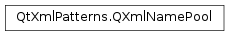

QXmlNamePool¶
Detailed Description¶
The
PySide2.QtXmlPatterns.QXmlNamePoolclass is a table of shared strings referenced by instances ofPySide2.QtXmlPatterns.QXmlName.
PySide2.QtXmlPatterns.QXmlNamePoolis used to optimize operations on instances ofPySide2.QtXmlPatterns.QXmlName. An instance ofPySide2.QtXmlPatterns.QXmlNamerepresents an XML name in a way that allows the XML name to be compared and passed around efficiently. The efficiency is achieved by storing the strings comprising the XML names in an instance ofPySide2.QtXmlPatterns.QXmlNamePool, where they are mapped to binary identifiers, which are then packed into a key which is stored in thePySide2.QtXmlPatterns.QXmlName.This means that each instance of
PySide2.QtXmlPatterns.QXmlNameis tied to the name pool it was created with, and that name pool should be kept in scope and used to create all instances ofPySide2.QtXmlPatterns.QXmlNamethat might be compared. Note also that the name pool is required if you must reconstitute thePySide2.QtXmlPatterns.QXmlNameas text, or if you must access any of its component strings, so although instances ofPySide2.QtXmlPatterns.QXmlNamecan be compared without reference to a name pool, the name pool must be kept in scope if the name’s strings must be accessed later.
-
class
PySide2.QtXmlPatterns.QXmlNamePool¶ -
class
PySide2.QtXmlPatterns.QXmlNamePool(other) Parameters: other – PySide2.QtXmlPatterns.QXmlNamePoolConstructs an empty name pool.
Constructs a copy of the
othername pool.
© 2018 The Qt Company Ltd. Documentation contributions included herein are the copyrights of their respective owners. The documentation provided herein is licensed under the terms of the GNU Free Documentation License version 1.3 as published by the Free Software Foundation. Qt and respective logos are trademarks of The Qt Company Ltd. in Finland and/or other countries worldwide. All other trademarks are property of their respective owners.